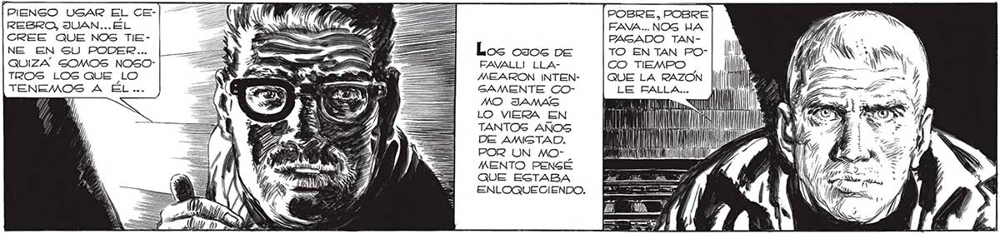

PIENSO USAR EL CERESRO, JUAN... ÉL CREE QUE NOS TIENE EN SU PODER... QUIZA SOMOS NOSOTROS LOS QUE LO TENEMOS A ÉL... POR UN MOLos osos pe FEAVALLI LLAMEARON INTENGAMENTE COMO JAMAS LO VIERA EN TANTOS ANOS , DE AMISTAD. INN ll POBRE, POBRE FAVA... NOS UA PAGADO TANTO EN TAN POCO TIEMPO QUE LA RAZON LE FALLA. Previo a A 00 AA hi ' WM UN l | WA Jl E Má = IAS ss MENTO PENGÉ QUE ESTABA Juli SS ENLOQUECIENDO. A, ¿COMO PUEDE SIQUIERA CONCEBIR QUE | NOSOTROS VENZAMOS AL MANO” Si NUESTRAS ARMAS GON INÚTILES...¡Sl TENEMOS CERRADO EL 4 CAMINO DE LA FUGA! Posee, POBRE FA VALL!... COMO IMAGINABA DERROTAR A AQUEL GER DE INTELIGENCIA GUPERIOR, CAPAZ DE MANEJAR A SU CAPRICHO POR MEDIO DE AQUEL TECLADO, A LOS INAGOTABLES “GASCA: RUDOS”, A LOS GUMISOS HOMBRESROBOTS, A LOS INATAJABLES, MONSTRUOSOS "SURBOS:. Sí, HOMBRE, LO SE... TERMINADA GU MI GIÓON MI COMPAÑERO FUE TRAGLADADO A OTRO LUGAR ... ¿POR QUÉ LO PREGUNTAG 2 PS ROSEOSEoSSS CORR IS SS Q Q xs 2 eS Ses Q e: 77 ERFLEREITN UN "y A Enrecé A COMPRENDER FAVALLI HABÍA DISPARADO UN TIRO AL AZAR,Y HABÍA ACERTADO. il MAN IMD yl UU Sl LA MENTE DE FAVALLI SE DISGREGABA EN EL DESEQUILIBRIO... ¿Y HOMBRES? TERMINAN DE PORQUE TE ENGAÑARON, ME MN ESCUCHA UN MOMENTO, “MANO”... ¿GCABES LO QUE LE P4S0O' A TU COMPAÑERO, EL MANO” QUE DIRIGIO El ATAQUE CONTRA. RIVER LATE,EL ESTADIO JUNTO AL RÍO? td Tn 7 DECIDIRSE ... il == === a SOS == A TU COMPAÑERO NO LE ENCOMENDARON NINGUNA OTRA MISION, MANO... ¿QUÉ QUIERES DECIR ÍCON QUE ME ENGAÑARON, HOMBRE 2 Ena HABÍA Es PECULADO CON QUE LOS ELLOS, LOS DIRECTORES DE LOG “MANOS”, HABRÍAN OCULTADO LA SUERTE CORRE DA POR EL MANO” QUE CAPTURAMOS EN LA BARRANCA... QUIZA NI LOS MIGSMOS ELLOS COM PRENDÍAN LO OCURRIDO... 237
